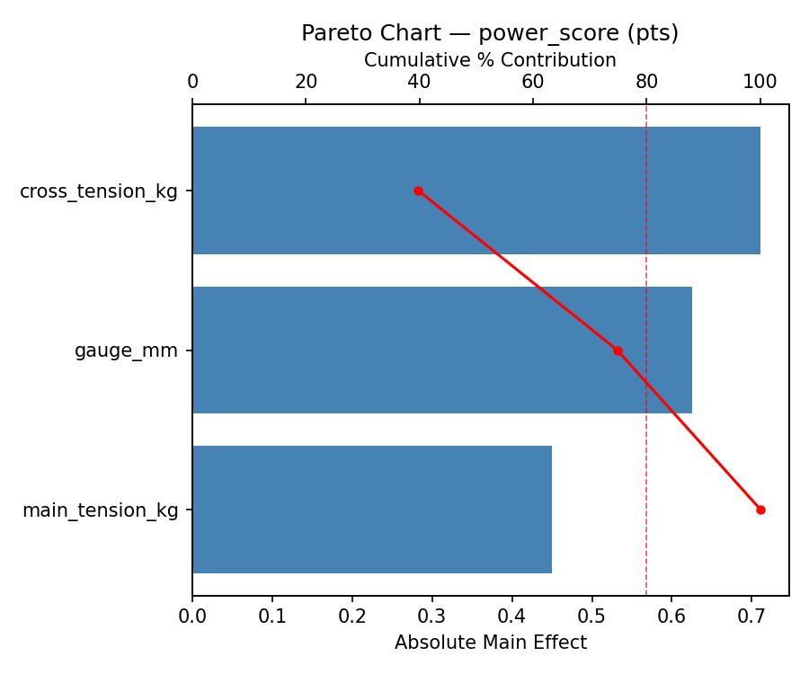
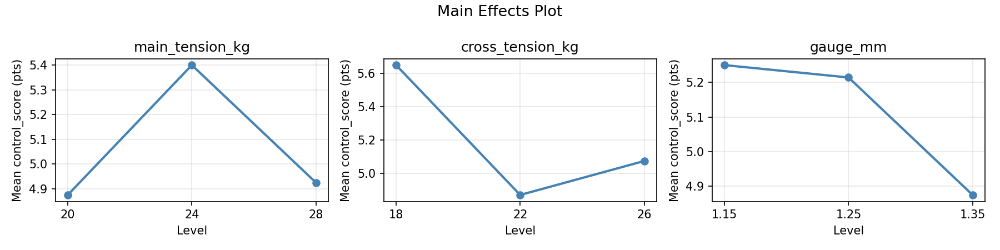
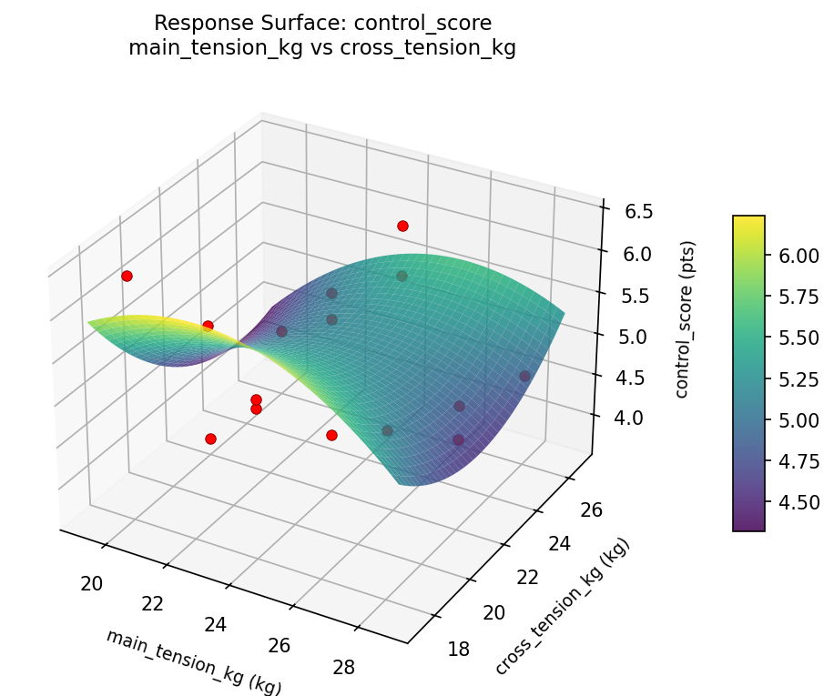
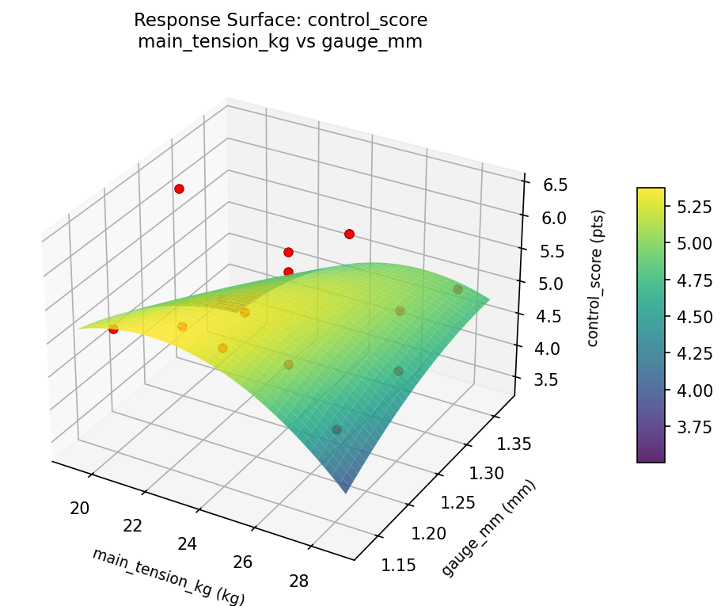
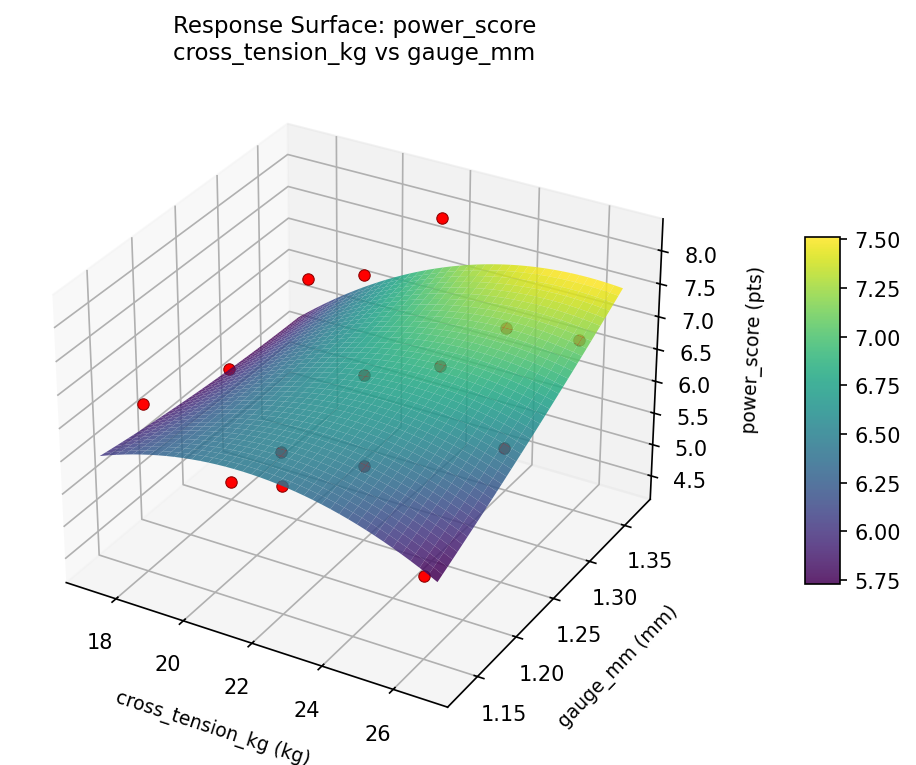

Summary
This experiment investigates tennis racket string setup. Box-Behnken design to maximize power and control by tuning main string tension, cross string tension, and string gauge.
The design varies 3 factors: main tension kg (kg), ranging from 20 to 28, cross tension kg (kg), ranging from 18 to 26, and gauge mm (mm), ranging from 1.15 to 1.35. The goal is to optimize 2 responses: power score (pts) (maximize) and control score (pts) (maximize). Fixed conditions held constant across all runs include racket = midplus_100, string material = polyester.
A Box-Behnken design was chosen because it efficiently fits quadratic models with 3 continuous factors while avoiding extreme corner combinations — requiring only 15 runs instead of the 8 needed for a full factorial at two levels.
Quadratic response surface models were fitted to capture potential curvature and factor interactions. The RSM contour plots below visualize how pairs of factors jointly affect each response.
Key Findings
For power score, the most influential factors were cross tension kg (39.8%), gauge mm (35.0%), main tension kg (25.2%). The best observed value was 8.2 (at main tension kg = 24, cross tension kg = 18, gauge mm = 1.35).
For control score, the most influential factors were cross tension kg (46.4%), main tension kg (31.3%), gauge mm (22.3%). The best observed value was 6.4 (at main tension kg = 24, cross tension kg = 26, gauge mm = 1.35).
Recommended Next Steps
- Run confirmation experiments at the predicted optimal settings to validate the model.
- Consider whether any fixed factors should be varied in a future study.
Experimental Setup
Factors
| Factor | Low | High | Unit |
|---|
main_tension_kg | 20 | 28 | kg |
cross_tension_kg | 18 | 26 | kg |
gauge_mm | 1.15 | 1.35 | mm |
Fixed: racket = midplus_100, string_material = polyester
Responses
| Response | Direction | Unit |
|---|
power_score | ↑ maximize | pts |
control_score | ↑ maximize | pts |
Configuration
{
"metadata": {
"name": "Tennis Racket String Setup",
"description": "Box-Behnken design to maximize power and control by tuning main string tension, cross string tension, and string gauge"
},
"factors": [
{
"name": "main_tension_kg",
"levels": [
"20",
"28"
],
"type": "continuous",
"unit": "kg"
},
{
"name": "cross_tension_kg",
"levels": [
"18",
"26"
],
"type": "continuous",
"unit": "kg"
},
{
"name": "gauge_mm",
"levels": [
"1.15",
"1.35"
],
"type": "continuous",
"unit": "mm"
}
],
"fixed_factors": {
"racket": "midplus_100",
"string_material": "polyester"
},
"responses": [
{
"name": "power_score",
"optimize": "maximize",
"unit": "pts"
},
{
"name": "control_score",
"optimize": "maximize",
"unit": "pts"
}
],
"settings": {
"operation": "box_behnken",
"test_script": "use_cases/211_tennis_racket_string/sim.sh"
}
}
Experimental Matrix
The Box-Behnken Design produces 15 runs. Each row is one experiment with specific factor settings.
| Run | main_tension_kg | cross_tension_kg | gauge_mm |
|---|
| 1 | 24 | 18 | 1.15 |
| 2 | 24 | 22 | 1.25 |
| 3 | 28 | 22 | 1.35 |
| 4 | 28 | 22 | 1.15 |
| 5 | 24 | 22 | 1.25 |
| 6 | 24 | 22 | 1.25 |
| 7 | 20 | 22 | 1.35 |
| 8 | 28 | 18 | 1.25 |
| 9 | 24 | 18 | 1.35 |
| 10 | 28 | 26 | 1.25 |
| 11 | 20 | 22 | 1.15 |
| 12 | 24 | 26 | 1.35 |
| 13 | 20 | 18 | 1.25 |
| 14 | 20 | 26 | 1.25 |
| 15 | 24 | 26 | 1.15 |
Step-by-Step Workflow
1
Preview the design
$ python doe.py info --config use_cases/211_tennis_racket_string/config.json
2
Generate the runner script
$ python doe.py generate --config use_cases/211_tennis_racket_string/config.json \
--output use_cases/211_tennis_racket_string/results/run.sh --seed 42
3
Execute the experiments
$ bash use_cases/211_tennis_racket_string/results/run.sh
4
Analyze results
$ python doe.py analyze --config use_cases/211_tennis_racket_string/config.json
5
Get optimization recommendations
$ python doe.py optimize --config use_cases/211_tennis_racket_string/config.json
6
Generate the HTML report
$ python doe.py report --config use_cases/211_tennis_racket_string/config.json \
--output use_cases/211_tennis_racket_string/results/report.html
Real-World Experiment Workflow
ℹ
Physical Sports Experiment? Use the Manual Workflow
Athletic experiments involve real human performance, equipment, and environmental conditions. Results require actual physical testing. The simulation script above is for demonstration. For your real experiments, use record, status, and export-worksheet.
$ python doe.py export-worksheet --config use_cases/211_tennis_racket_string/config.json \
--format csv --output worksheet.csv
$ python doe.py status --config use_cases/211_tennis_racket_string/config.json
$ python doe.py record --config use_cases/211_tennis_racket_string/config.json --run 1
$ python doe.py analyze --config use_cases/211_tennis_racket_string/config.json --partial
$ python doe.py analyze --config use_cases/211_tennis_racket_string/config.json
$ python doe.py optimize --config use_cases/211_tennis_racket_string/config.json
$ python doe.py report --config use_cases/211_tennis_racket_string/config.json \
--output report.html
✔
Works Without a Test Script
The analysis pipeline doesn't care how results were produced. Record your measurements with record, and the full analysis, optimization, and reporting pipeline works identically. Use --partial to get early insights before all runs are complete.
Features Exercised
| Feature | Value |
|---|
| Design type | box_behnken |
| Factor types | continuous (all 3) |
| Arg style | double-dash |
| Responses | 2 (power_score ↑, control_score ↑) |
| Total runs | 15 |
Analysis Results
Generated from actual experiment runs using the DOE Helper Tool.
Response: power_score
Top factors: cross_tension_kg (39.8%), gauge_mm (35.0%), main_tension_kg (25.2%).
Pareto Chart

Main Effects Plot

Response: control_score
Top factors: cross_tension_kg (46.4%), main_tension_kg (31.3%), gauge_mm (22.3%).
Pareto Chart

Main Effects Plot

Response Surface Plots
3D surfaces fitted with quadratic RSM. Red dots are observed data points.
control score cross tension kg vs gauge mm

control score main tension kg vs cross tension kg

control score main tension kg vs gauge mm

power score cross tension kg vs gauge mm

power score main tension kg vs cross tension kg

power score main tension kg vs gauge mm

Full Analysis Output
RSM surface: rsm_power_score_main_tension_kg_vs_cross_tension_kg.png
RSM surface: rsm_power_score_main_tension_kg_vs_gauge_mm.png
RSM surface: rsm_power_score_cross_tension_kg_vs_gauge_mm.png
RSM surface: rsm_control_score_main_tension_kg_vs_cross_tension_kg.png
RSM surface: rsm_control_score_main_tension_kg_vs_gauge_mm.png
RSM surface: rsm_control_score_cross_tension_kg_vs_gauge_mm.png
=== Main Effects: power_score ===
Factor Effect Std Error % Contribution
--------------------------------------------------------------
cross_tension_kg 0.7107 0.2740 39.8%
gauge_mm 0.6250 0.2740 35.0%
main_tension_kg 0.4500 0.2740 25.2%
=== Summary Statistics: power_score ===
main_tension_kg:
Level N Mean Std Min Max
------------------------------------------------------------
20 4 6.2000 1.5122 4.4000 8.1000
24 7 6.5286 0.9759 5.3000 8.2000
28 4 6.6500 0.9574 5.8000 8.0000
cross_tension_kg:
Level N Mean Std Min Max
------------------------------------------------------------
18 4 5.9750 1.0720 4.4000 6.7000
22 7 6.6857 1.1067 5.3000 8.2000
26 4 6.6000 1.0954 5.4000 8.0000
gauge_mm:
Level N Mean Std Min Max
------------------------------------------------------------
1.15 4 6.2000 0.5944 5.4000 6.7000
1.25 7 6.4286 1.3647 4.4000 8.2000
1.35 4 6.8250 0.9535 5.8000 8.1000
=== Main Effects: control_score ===
Factor Effect Std Error % Contribution
--------------------------------------------------------------
cross_tension_kg 0.7786 0.1912 46.4%
main_tension_kg 0.5250 0.1912 31.3%
gauge_mm 0.3750 0.1912 22.3%
=== Summary Statistics: control_score ===
main_tension_kg:
Level N Mean Std Min Max
------------------------------------------------------------
20 4 4.8750 1.1673 3.7000 6.4000
24 7 5.4000 0.5916 4.2000 6.0000
28 4 4.9250 0.4272 4.6000 5.5000
cross_tension_kg:
Level N Mean Std Min Max
------------------------------------------------------------
18 4 5.6500 0.5066 5.3000 6.4000
22 7 4.8714 0.7697 3.7000 5.9000
26 4 5.0750 0.7719 4.3000 6.0000
gauge_mm:
Level N Mean Std Min Max
------------------------------------------------------------
1.15 4 5.2500 0.5802 4.6000 6.0000
1.25 7 5.2143 0.8513 4.2000 6.4000
1.35 4 4.8750 0.8057 3.7000 5.4000
Pareto chart (power_score): use_cases/211_tennis_racket_string/results/analysis/pareto_power_score.png
Pareto chart (control_score): use_cases/211_tennis_racket_string/results/analysis/pareto_control_score.png
Main effects (power_score): use_cases/211_tennis_racket_string/results/analysis/main_effects_power_score.png
Main effects (control_score): use_cases/211_tennis_racket_string/results/analysis/main_effects_control_score.png
Optimization Recommendations
=== Optimization: power_score ===
Direction: maximize
Best observed run: #11
main_tension_kg = 24
cross_tension_kg = 18
gauge_mm = 1.35
Value: 8.2
RSM Model (linear, R² = 0.1295, Adj R² = -0.1079):
Coefficients:
intercept +6.4733
main_tension_kg +0.1375
cross_tension_kg -0.4625
gauge_mm +0.1500
RSM Model (quadratic, R² = 0.7341, Adj R² = 0.2556):
Coefficients:
intercept +7.4000
main_tension_kg +0.1375
cross_tension_kg -0.4625
gauge_mm +0.1500
main_tension_kg*cross_tension_kg +0.2250
main_tension_kg*gauge_mm +0.4500
cross_tension_kg*gauge_mm -1.1500
main_tension_kg^2 -0.5875
cross_tension_kg^2 -0.5375
gauge_mm^2 -0.6125
Curvature analysis:
gauge_mm coef=-0.6125 concave (has a maximum)
main_tension_kg coef=-0.5875 concave (has a maximum)
cross_tension_kg coef=-0.5375 concave (has a maximum)
Notable interactions:
cross_tension_kg*gauge_mm coef=-1.1500 (antagonistic)
main_tension_kg*gauge_mm coef=+0.4500 (synergistic)
Predicted optimum (from quadratic model):
main_tension_kg = 24
cross_tension_kg = 18
gauge_mm = 1.35
Predicted value: 8.0125
Model quality: Good fit — general trends are captured, some noise remains.
Factor importance:
1. cross_tension_kg (effect: 0.9, contribution: 41.1%)
2. gauge_mm (effect: 0.7, contribution: 30.3%)
3. main_tension_kg (effect: 0.6, contribution: 28.6%)
=== Optimization: control_score ===
Direction: maximize
Best observed run: #3
main_tension_kg = 24
cross_tension_kg = 26
gauge_mm = 1.35
Value: 6.4
RSM Model (linear, R² = 0.2378, Adj R² = 0.0300):
Coefficients:
intercept +5.1333
main_tension_kg +0.1250
cross_tension_kg +0.4500
gauge_mm +0.1000
RSM Model (quadratic, R² = 0.8447, Adj R² = 0.5652):
Coefficients:
intercept +4.4667
main_tension_kg +0.1250
cross_tension_kg +0.4500
gauge_mm +0.1000
main_tension_kg*cross_tension_kg -0.4000
main_tension_kg*gauge_mm -0.1000
cross_tension_kg*gauge_mm +0.6500
main_tension_kg^2 +0.6667
cross_tension_kg^2 +0.1167
gauge_mm^2 +0.4667
Curvature analysis:
main_tension_kg coef=+0.6667 convex (has a minimum)
gauge_mm coef=+0.4667 convex (has a minimum)
cross_tension_kg coef=+0.1167 convex (has a minimum)
Notable interactions:
cross_tension_kg*gauge_mm coef=+0.6500 (synergistic)
main_tension_kg*cross_tension_kg coef=-0.4000 (antagonistic)
Predicted optimum (from quadratic model):
main_tension_kg = 24
cross_tension_kg = 26
gauge_mm = 1.35
Predicted value: 6.2500
Model quality: Good fit — general trends are captured, some noise remains.
Factor importance:
1. cross_tension_kg (effect: 0.9, contribution: 41.7%)
2. main_tension_kg (effect: 0.8, contribution: 34.7%)
3. gauge_mm (effect: 0.5, contribution: 23.6%)